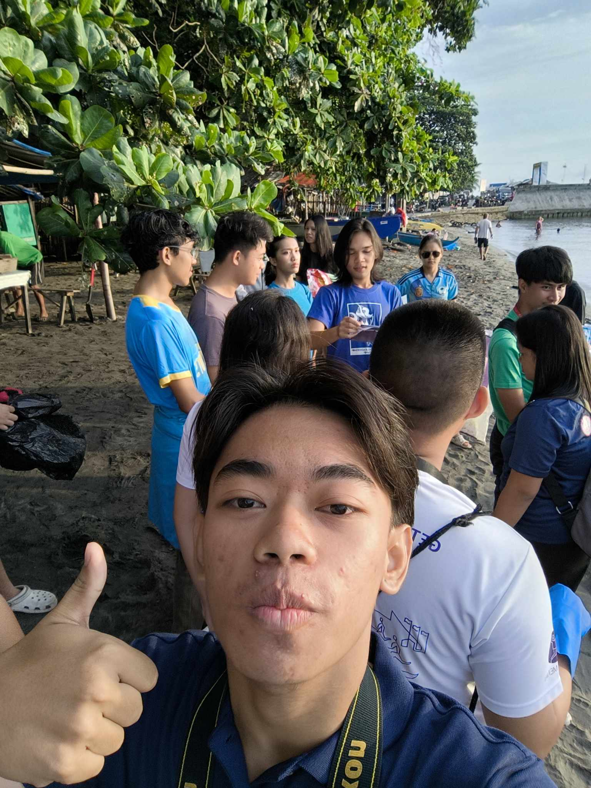
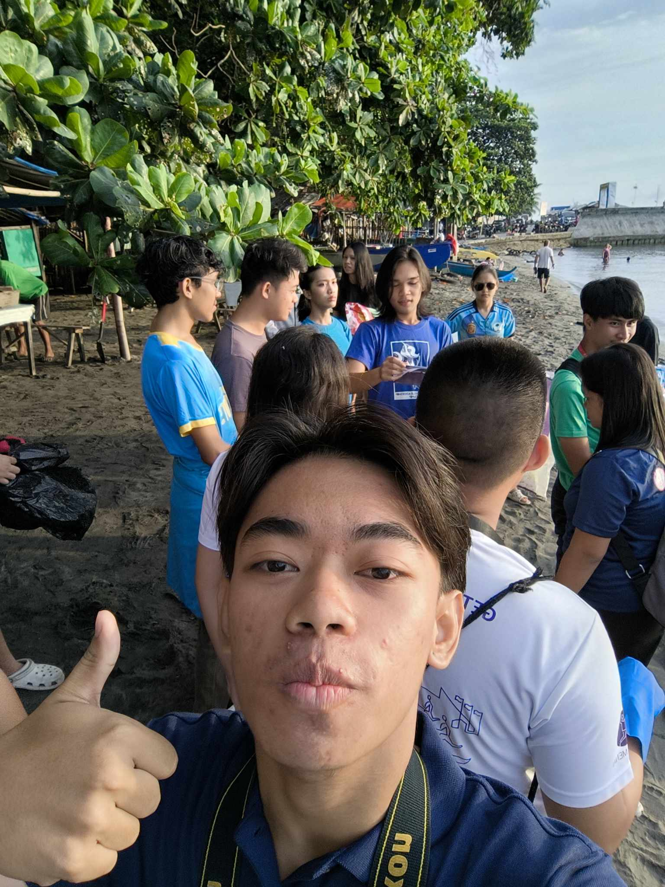

Journal Entries
GE10A
On August 22, 2024, I attended the Esports Leaderboards Semi-finals, organized by CCS, from 2 to 5 PM. This event was part of the intramural games where teams competed in various esports games to qualify for the finals. As a participant, I enjoyed watching the matches, cheering for my department, and observing how the games were strategized and played.
The activity made it clear to me that esports involve more than just playing games; it also requires focus, strategy, and teamwork. I found the players' skill and coordination to be quite impressive, which made the contests fascinating to watch. The best part was witnessing the teams' spirit of competition and their support for one another even after a defeat. It gave me a new appreciation for esports as a legitimate sport.
My perspective on esports has grown as a result of this experience; it now encompasses more than just playing games; it also requires mental focus, strategy, and discipline. I also noticed the advantages of planning such events, as they foster relationships among students and promote teamwork. I would like to assist with event planning or maybe join a team to get a personal look at the competition if I could be more active in the future.
Because of this activity, I now recognize the importance of esports as a venue for teamwork, strategy, and skill development. I also became more appreciative of the players' and organizers' commitment to making the tournament a success. I now see that activities like this foster a sense of community among students in addition to their competitive spirit, which opens doors for cooperation and individual development.
On September 7, 2024, I attended the Plantout Sports & Fitness Festival (PSFF) Badminton Tournament, held from 2 to 4 PM. This event brought together players from different groups to compete in friendly badminton matches. As a participant, I enjoyed watching the games and cheering for the players, many of whom displayed remarkable athletic skills.
This activity reminded me of how sports can bring people together and promote physical fitness. I admired the players’ dedication and the energy they brought to each match. The most memorable part was seeing the sportsmanship between players, even during intense moments. It was inspiring to watch how everyone supported one another and celebrated the joy of playing.
This experience made me more aware of the benefits of participating in sports, not just for fitness but also for building camaraderie. I want to take part in similar events in the future, either as a player or a more active supporter. If I could attend again, I would make an effort to try badminton myself and encourage others to join.
Because of this activity, I am more interested in exploring sports and inspired to promote teamwork and fitness. I feel more motivated to include physical activities in my routine.
On September 7, 2024, I attended the Plantout Sports & Fitness Festival (PSFF) Karate Tournament, held from 10 AM to 12 PM. The event showcased participants from various groups competing in friendly karate matches. As a spectator, I watched the matches and cheered for the players, appreciating their discipline and skills. The goal of the tournament was to promote sportsmanship and fitness among the participants.
My appreciation for martial arts and the commitment it demands has grown as a result of this activity. I was inspired by the players' laser-like attention and accuracy, and I became aware of the amount of work required to become skilled in a sport like karate. Seeing the players' resolve and respect for one another, regardless of the outcome, was the most thrilling aspect. It served as a reminder to me that hard effort and discipline are essential to reaching any objective.
I was inspired by this event to look into martial arts as a means of strengthening my self-control and physical conditioning. I was also motivated to attend more physical events in order to observe the athletes' commitment and focus. I would like to participate more by learning more about the sport and asking participants about their experiences if I could go again.
Because of this activity, I am more inspired to embrace sports as a way to grow physically and mentally. I feel more motivated to challenge myself to try new activities. This event also reminded me to step out of my comfort zone and try new things that challenge me.
On September 7, 2024, I attended the Plantout Sports & Fitness Festival (PSFF) Futsal Tournament, from 4 to 6 PM. The event brought teams together to compete in a fast-paced, small-sided soccer match. As a spectator, I supported the players by cheering for them and enjoying the energy of the game. The matches showcased teamwork, strategy, and athleticism.
This activity made me appreciate how sports can bring out the best in teamwork and cooperation. I was impressed by the players' quick thinking and coordination during the game. The most memorable moment was seeing how the players motivated each other after mistakes, which showed their strong sense of camaraderie. It taught me the value of persistence and staying positive even in challenging situations.
This experience motivated me to be more involved in team sports or other group activities to build similar bonds with others. I also want to continue attending futsal games to better understand the strategies involved. If I could attend again, I’d bring friends along to share the excitement and support the players.
Because of this activity, I am more aware of the power of teamwork and inspired to embrace collaboration in my own life. I feel encouraged to support and learn from group activities. I also feel more connected to the community and motivated to explore group activities that foster unity and fun.
On September 8, 2024, I attended the PSFF Roundnet (Spikeball) Tournament, held from 1 to 3 PM. This event featured a unique and energetic sport where teams competed by bouncing a ball off a small net. As a spectator, I enjoyed watching the fast-paced matches and cheering for the players. The tournament highlighted the creativity and adaptability needed to excel in this sport.
It was fascinating and enjoyable to witness this activity, which introduced me to a new sport I had never seen before. The players' speed and agility really stood out to me, and their ability to work as a team was essential to carrying out hits. The players' enjoyment, even during competitive moments, was the best part. It proved to me that sports can be both demanding and entertaining.
I was inspired by this experience to take on new sports and hobbies, even ones that don't appear familiar at first. I want to learn more about spikeball and possibly play it as a pastime with friends. I would participate as a player to feel the thrill for myself if I could go again.
Because of this activity, I am more willing to attempt new things and find new ways to keep active as a result of this activity. I'm inspired to push myself and venture beyond of my comfort zone. I also feel more confident in my ability to adapt and take on challenges, even in areas I’m not familiar with.
On September 8, 2024, I attended the PSFF Softball Tournament, organized as part of the Plantout Sports & Fitness Festival, from 3 to 5 PM. This event brought together teams that competed in friendly matches, showcasing their skills and teamwork. As a spectator, I enjoyed cheering for the players and watching the excitement unfold on the field. The tournament aimed to encourage physical fitness and camaraderie among participants.
I now have a greater grasp of the strategy and teamwork needed in softball thanks to this activity. Despite the game's competitive nature, I liked how players helped one other out and maintained their focus. The player's spectacular catch that changed the outcome of the game stands out as the most unforgettable moment. It helped me see how valuable lessons like patience, determination, and trust can be learned via athletics.
I'm inspired to learn more about team sports and the tactics used because of this encounter. As a means of building relationships and appreciating physical fitness, I wish to inspire others to engage in like activities. If I were able to go again, I would try playing softball myself and bring more enthusiasm to the team cheering.
Because of this activity, I am more appreciative of the value of teamwork and determination in achieving success. It reminded me that sports are not only about competition but also about building strong connections with others. I also feel motivated to explore new sports and activities that challenge me physically and mentally.
On September 8, 2024, I attended the PSFF Pickleball Tournament, organized as part of the Plantout Sports & Fitness Festival, from 9 to 11 AM. Pickleball, a combination of tennis, badminton, and table tennis, was a unique sport I had the chance to witness for the first time. As a spectator, I watched players demonstrate impressive coordination and agility in this fast-paced game. The event showcased how fun and inclusive sports can be.
I learned about a sport I didn't know much about through this activity, and I was impressed by its energy and simplicity. Seeing individuals with varying skill levels compete and still have a great time was fascinating. The greatest thing was that the sport made it fun for both participants and spectators by promoting laughter and competition. It demonstrated to me how attempting something new might result in unanticipated happiness and connection.
After this event, I feel motivated to give pickleball a try and encourage friends to play as well. It seems like a great way to stay active while having fun. If I could attend again, I would make sure to bring others along to experience the excitement and even participate as a beginner.
Because of this activity, I am more open to exploring sports that I’ve never tried before. It reminded me that stepping out of my comfort zone can lead to surprising discoveries. I also feel more confident in encouraging others to join me in exploring activities that are new and fun.
On October 13, 2024, I attended the U13 Team Championship Game against DCA, organized by the Don Bosco Greywolves, from 5:30 to 8 PM. This event was a highly anticipated match where young athletes showcased their skills and determination. As a participant, I was a spectator, cheering for the team and enjoying the excitement of the game.
I learned from this game that sports, particularly for young athletes, may serve as an instrument for fostering resilience, discipline, and teamwork. I was impressed by the players' commitment and their ability to cooperate to win. The most thrilling aspect was the crowd's enthusiasm, which heightened the game's tense atmosphere. I had a greater appreciation for the players' training efforts and the community's support.
After seeing this game, I was motivated to urge younger people to participate in sports and to support more youth sports programs. It also made me appreciate how encouraging and motivating it is to support others. I would invite more friends to join in the fun and assist raise the spirits of the team if I could go again.
Because of this activity, I am more supportive of youth development through sports and thankful for the chance to witness their hard work and passion. I feel inspired to contribute to similar events in the future.